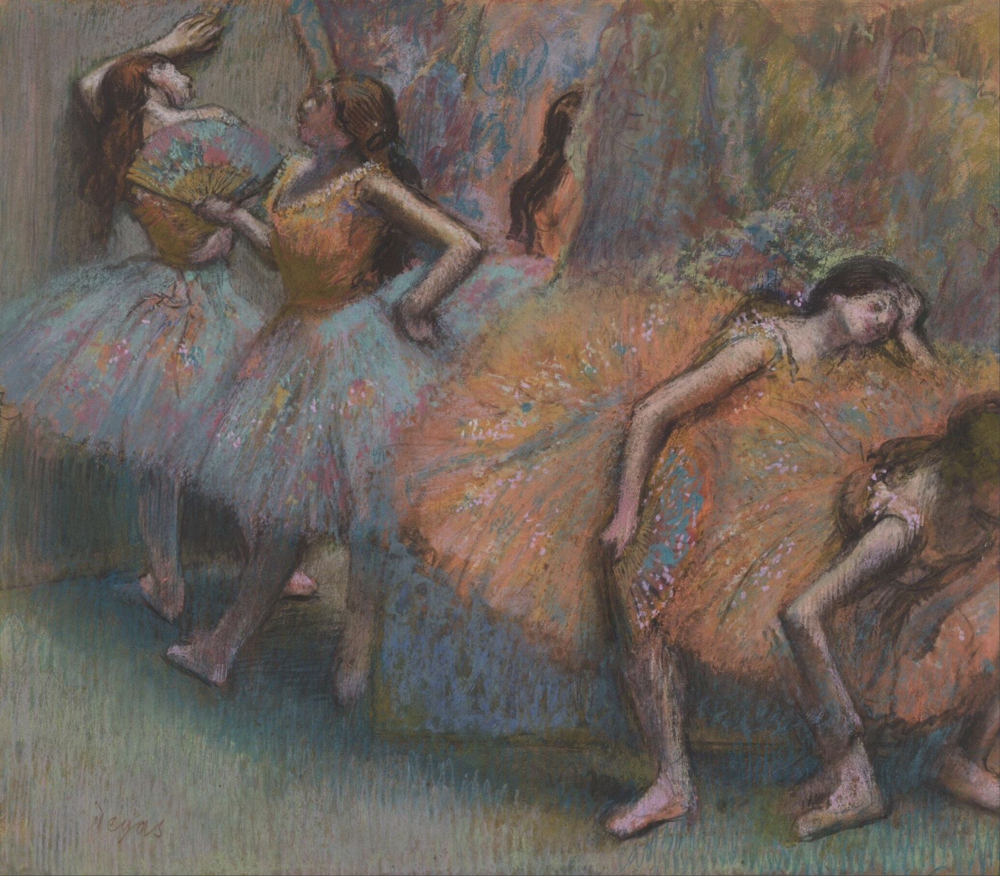

芭蕾舞者 Ballet Dancers
德加 · 1888年 · 伦敦国家美术馆
Edgar Degas · 1888 · The National Gallery, London
图片：Wikimedia Commons，公有领域 / Image: Wikimedia Commons, public domain

发现 · Discover
幕后 Behind the scenes
德加喜欢捕捉幕后的瞬间。这里，四位芭蕾舞者正在侧幕休息。
Degas loved capturing moments behind the scenes. Here, four ballet dancers rest in the wings.
蹲下的舞者 Crouching down
第一位舞者蹲着，也许在揉酸痛的肌肉，也许在整理丝带。
The first dancer crouches down, perhaps to ease a sore muscle or adjust a ribbon.
累了 Exhausted
她身后的舞者明显累坏了，一手托着头。
The dancer behind her is visibly exhausted, resting her head in one hand.
扇子 The fan
第三位舞者拿着一把色彩鲜艳的扇子。
The third dancer holds a brightly coloured fan.
靠在墙上 Against the wall
第四位舞者靠在墙上。
The fourth leans against the wall.
一条斜线 A diagonal
四位舞者沿着一条斜线排列，构图不对称，右下角被截断，这是受了日本版画的影响。
The four dancers are arranged along a diagonal, in an asymmetrical composition cropped at the lower right, reflecting the influence of Japanese prints.
粉彩 Pastel
这幅画用的是粉彩。德加从19世纪80年代起特别喜欢粉彩，因为它能画出非常鲜艳的颜色。
This is a pastel. From the 1880s, Degas favoured pastel for its vivid colours.
故事 · The story
ACT I 第一幕 · 幕布后面 Behind the curtain
德加一生画了大量芭蕾舞者。比起舞台上的光彩，他更喜欢画幕后：等待、休息、整理舞鞋的那些时刻。
Degas painted ballet dancers throughout his life. More than the glamour on stage, he loved the moments behind it: waiting, resting, adjusting a shoe.
1888年 · 伦敦国家美术馆 / 1888 · The National Gallery, London
ACT II 第二幕 · 画室里的“快照” A “snapshot” made in the studio
这幅画看起来像是在后台当场画下的快照，其实是在画室里，用之前画的多张单人舞者习作组合起来的。
It looks like a snapshot drawn on the spot, but it was made in his studio, combining earlier studies of individual dancers.
1888年 · 伦敦国家美术馆 / 1888 · The National Gallery, London
ACT III 第三幕 · 2025年来到伦敦 To London in 2025
这幅画一直属于私人收藏。2025年，它进入了伦敦国家美术馆。
For many years this pastel was in a private collection. In 2025, it entered the National Gallery in London.
1888年 · 伦敦国家美术馆 / 1888 · The National Gallery, London
舞台的灯亮起之前。 Before the stage lights come up.
作品档案 · Artwork record
| 画家（生卒年） · Artist (dates) | 埃德加·德加（1834–1917） / Edgar Degas (1834–1917) |
|---|---|
| 画名 · Title | 芭蕾舞者 / Ballet Dancers |
| 年份 · Date | 1888年 / 1888 |
| 材质 · Medium | 粉彩 / Pastel |
| 尺寸 · Dimensions | 62.6 × 70.8 cm |
| 收藏地 · Collection | 伦敦国家美术馆（2025年入藏；编号 NG6705） / The National Gallery, London (acquired 2025; NG6705) |
关于画家 · About the artist
埃德加·德加（1834–1917），法国画家，生于巴黎。他参加了印象派画展，以描绘芭蕾舞者著称。
Edgar Degas (1834–1917) was a French painter, born in Paris. He took part in the Impressionist exhibitions and is best known for his paintings of ballet dancers.